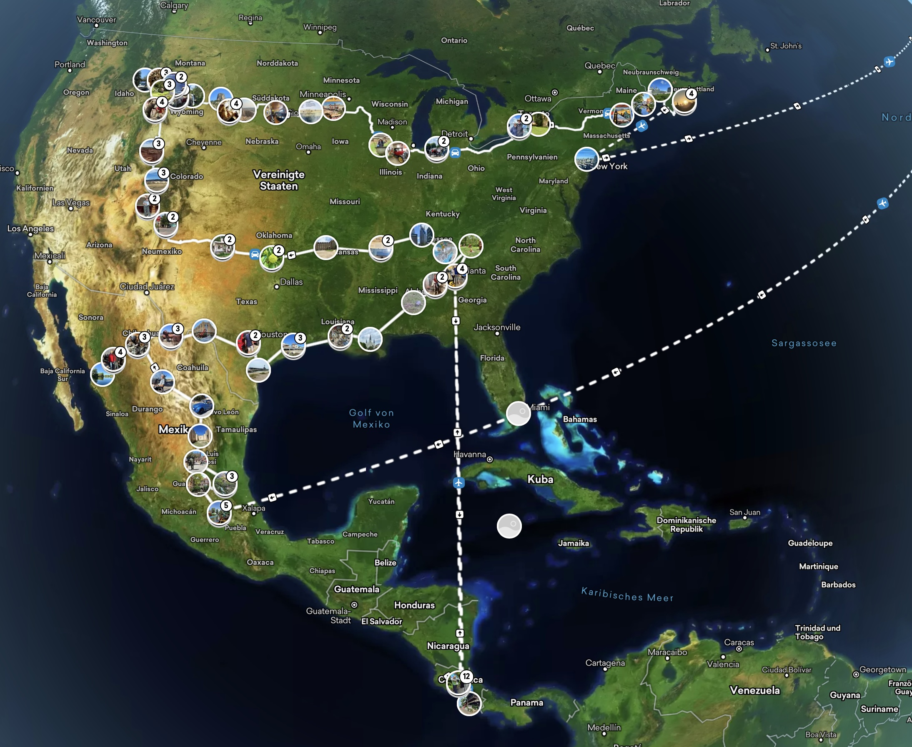

† 2025
Wenn ich an Heinz denke, denke ich zuerst an unsere gemeinsame Zeit bei der BERAL in Marienheide. Über diese Zeit habe ich im Kapitel "Jugend" die Episode "Willste Kuken?" geschrieben. Heinz war der jüngere Bruder meines besten Freundes Manni. Richtig kennengelernt haben wir uns, als wir beide dort einen Ferienjob annahmen. Die Arbeit war anstrengend, aber wir hatten auch viel Spaß. Heinz war ein lustiger Typ, und es gab unzählige Situationen, in denen wir uns über seine Scherze oder über den Unsinn, den wir gemeinsam anstellten, herzlich amüsierten.
Später verloren wir uns etwas aus den Augen. Heinz studierte Betriebswirtschaft und wurde Unternehmensberater. Mit sechzig Jahren stieg er vorzeitig aus dem Berufsleben aus. Nicht, weil er genug vom Leben hatte, sondern weil er endlich mehr davon sehen wollte. Heinz hatte immer davon geträumt, die Welt zu bereisen.
Kurz vor seinem Ruhestand zeigte er mir auf seinem Handy eine Liste mit all den Zielen, die er noch besuchen wollte. Darunter war der Kilimandscharo. Den bestieg er später gemeinsam mit seiner Frau Margit. Von seiner Abfindung ließ er sich außerdem ein besonderes Wohnmobil bauen, ein allradgetriebenes Expeditionsfahrzeug, mit dem er auch auf schwierigen Strecken vorankommen konnte. Das Ding kostete ihn ein Vermögen. Aber es war sein Traum, und Heinz erfüllte ihn sich.
Als Russland noch problemlos bereist werden konnte, fuhr er mit Margit und ihrem Hund in seinem Wohnmobil dorthin und weiter entlang der Seidenstraße über die STAN-Staaten nach Süden und dann über Georgien und die Türkei zurück. Nach meiner Erinnerung war er dabei fast ein ganzes Jahr unterwegs. Später bereiste er Nordafrika und andere Teile der Welt. Wir blieben währenddessen in lockerem Kontakt, und hin und wieder besuchten Heinz und Margit uns.
Einer dieser Besuche war im August 2022. Ich hatte Holz anliefern lassen und fuhr es mit der Schubkarre über eine Rampe hinauf in den Holzschuppen. Margit sagte zu ihm: „Heinz, hilf doch mal dem Lothar.“ Eigentlich hätte ich das locker allein geschafft. Heinz wollte trotzdem helfen, brachte die Schubkarre aber nur bis zur Hälfte der Rampe. Mir war außerdem aufgefallen, dass er immer wieder etwas nervös hüstelte und schnell außer Atem geriet.
Wir führten das zunächst darauf zurück, dass Heinz sehr genau auf seinen Körper achtete und vielleicht ein wenig zur Psychosomatik neigte. Trotzdem kam mir seine Kurzatmigkeit nicht ganz geheuer vor. Ich sagte zu ihm: „Hör mal, Heinz, das ist doch nicht in Ordnung. Das solltest du untersuchen lassen.“
Heinz lebte in Gießen und hatte das Glück, dass es dort ein großes Lungenzentrum gab. Schließlich wurde eine Lungenbiopsie vorgenommen. Die Diagnose lautete idiopathische Lungenfibrose. Dabei vernarbt das Lungengewebe zunehmend, ohne dass sich eine eindeutige Ursache feststellen lässt. Heilen kann man diese Krankheit bis heute nicht. Medikamente können ihren Verlauf bremsen, aber die Prognose bleibt schlecht. Häufig ist von einer mittleren Überlebenszeit von drei bis fünf Jahren nach der Diagnose die Rede, wobei die Erkrankung individuell sehr unterschiedlich verlaufen kann.
Nach der Diagnose beschloss Heinz, noch einmal zu einer großen Reise aufzubrechen. Sie führte ihn von Neufundland quer durch Kanada nach Westen, anschließend durch den Westen der USA und weiter bis nach Mexiko. Seine Behandlung hatte er so organisiert, dass er die notwendigen Medikamente und medizinische Betreuung an verschiedenen Zentren in Kanada und den USA erhalten konnte. Als er losfuhr, wusste er noch nicht, dass dies seine letzte große Reise werden würde.

Mit der Zeit machte sich die Krankheit immer stärker bemerkbar. Besonders die Höhe in den Rocky Mountains vertrug Heinz nicht mehr. Schließlich kehrte er nach Deutschland zurück. Im Frühjahr 2025 ging es dann ziemlich steil bergab. Er wurde immer schmaler und kraftloser und starb gegen Ende des Jahres 2025 in Anwesenheit seines Bruders Manni.
Was kann man dazu sagen? Es war zu früh. Heinz hätte noch ein paar Jährchen verdient gehabt. Sein Enkelkind, auf das er sich gefreut hatte, erlebte er nicht mehr. Mit dem Tod kann man deshalb keinen wirklichen Frieden schließen.
Andererseits hatte Heinz mit sechzig Jahren aufgehört zu arbeiten und danach zehn erfüllte Jahre mit den Reisen verbracht, von denen er immer geträumt hatte. Er hatte sich nicht nur ein Expeditionsfahrzeug bauen lassen, sondern war damit auch tatsächlich losgefahren. Wir behalten ihn als einen lustigen, aufgeschlossenen und inspirierendenMenschen in Erinnerung, den man immer gerne um sich hatte.
Als Heinz schwächer wurde, reflektierte ich wieder einmal über den Tod und das Leben. Mir fiel ein Text von Reinhard Mey ein, der sich mit dem Tod beschäftigte. Ich fand ihn zu einseitig und versah ihn stattdessen mit einem positiven Grundtenor: Man muss leben, solange dies möglich ist. Ein Geschenk, für welches man täglich dankbar sein darf. Und wenn es soweit ist, dann darf man zufrieden zurückschauen und den Weg in die andere Welt antreten. Diese Gedanken habe ich in ein Lied gebracht. Es heisst „Lebe“.